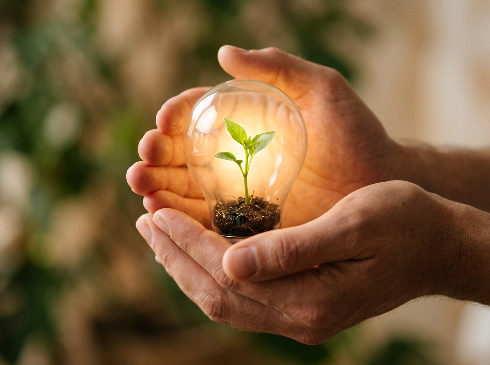
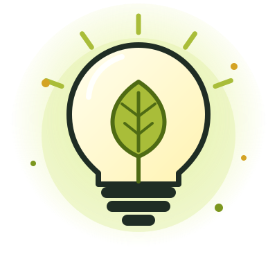
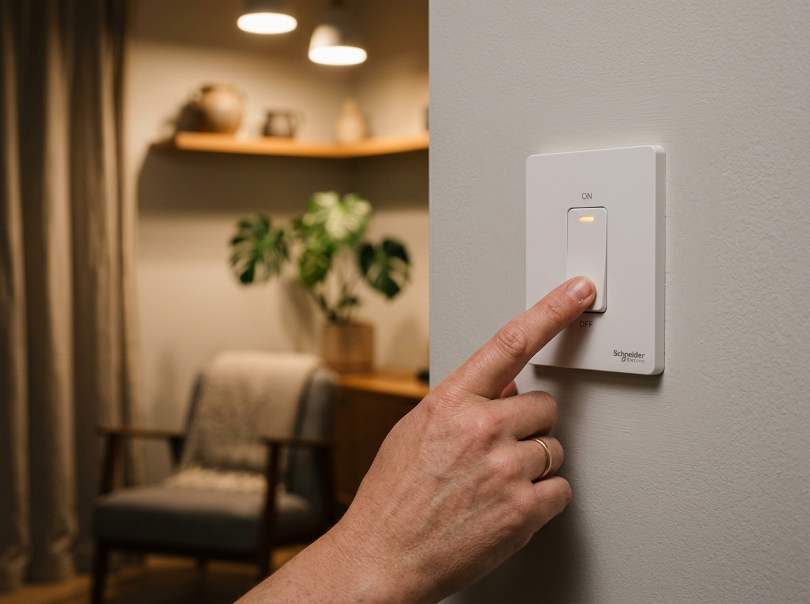
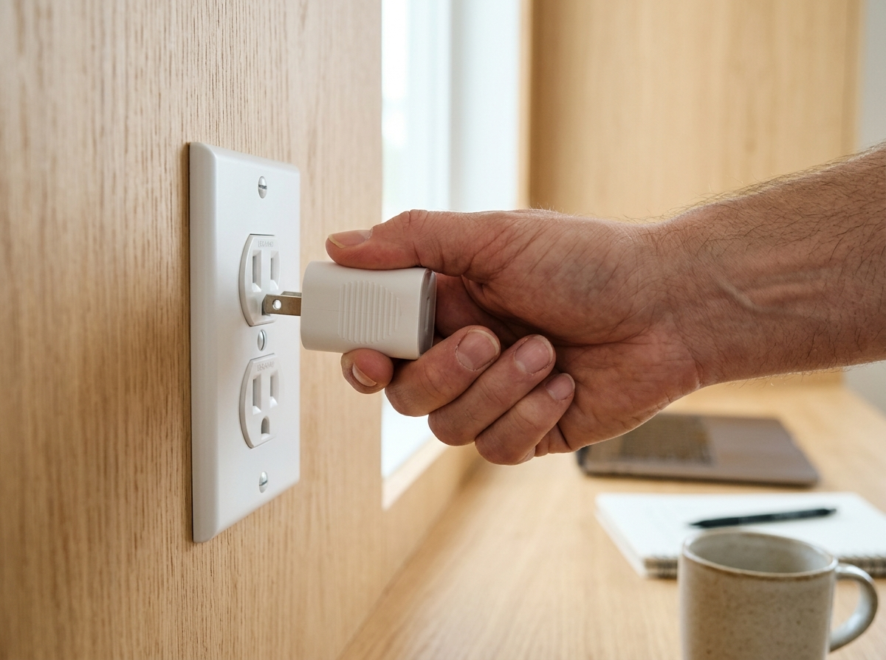
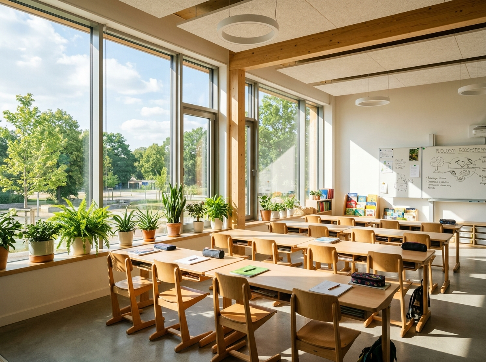
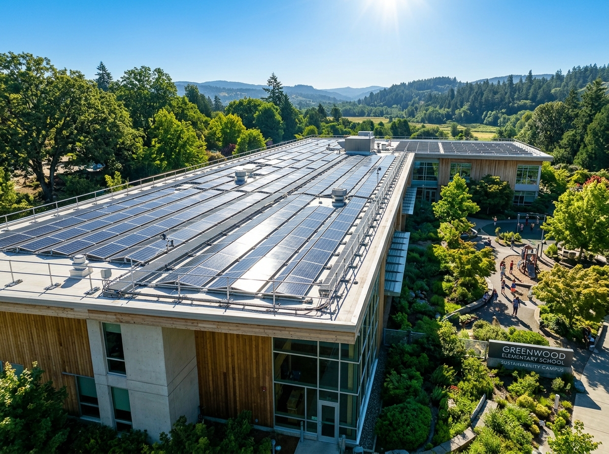

Mulai dari aku
Biasakan memakai listrik hanya saat diperlukan.
Gerakan hemat energi bersama
WEnergy mengajak kita semua mulai dari kebiasaan kecil di sekolah dan di rumah: matikan lampu saat tidak digunakan dan gunakan energi seperlunya.

Tentang WEnergy
WEnergy (“WE” berarti kita) mengajak seluruh warga sekolah membangun kebiasaan menggunakan listrik secara bijak. Langkah kecil yang dilakukan bersama bisa menciptakan lingkungan belajar yang lebih nyaman dan berkelanjutan.
Lihat temuan data angket
Satu kebiasaan baik dimulai hari ini
Biasakan memakai listrik hanya saat diperlukan.
Ajak teman dan warga sekolah ikut peduli.
Hemat energi berarti ikut menjaga lingkungan.
Fase 2 — Data Lapangan
Hasil kuesioner perilaku hemat energi dari 636 responden siswa kelas XI (tingkat partisipasi 99.4%). Data ini menjadi dasar penyusunan rekomendasi aksi di Fase 3.
92% siswa sudah terbiasa mencabut kabel steker/charger dan 98.6% sadar melakukan penghematan dasar harian.
13.7% siswa belum membatasi pemakaian laptop/gawai idle, dan 13.2% masih segan menegur rekan sekelas yang boros listrik.
Fase 3 — Rekomendasi & Ajakan Aksi
Setiap rekomendasi di bawah ini berpijak langsung pada temuan angket Fase 2. Bukan sekadar himbauan klise, melainkan solusi spesifik yang dapat langsung diterapkan bersama di kelas dan bengkel.
Sebanyak 13.2% (84 siswa) masih merasa canggung atau takut menegur teman satu kelas saat melihat peralatan listrik dibiarkan menyala di ruang kosong.
Bentuk tim Duta Energi Rombel bergilir setiap minggu. Mengubah teguran personal menjadi tanggung jawab piket resmi kelas, sehingga mematikan saklar dan AC menjadi budaya wajar tanpa rasa sungkan antar teman.
Sebanyak 13.7% (87 siswa) belum membatasi pemakaian laptop/gawai siaga (idle), dengan rerata terendah pada jurusan teknologi (PPLG) yang sering membiarkan laptop menyala terus-menerus.
Terapkan aturan Power Saver: atur layar otomatis mati setelah 5 menit tanpa interaksi, dan segera cabut charger laptop saat baterai menyentuh 80–90% untuk memutus beban listrik siaga.
Sebanyak 10.5% (67 siswa) jarang membuka tirai/jendela untuk pencahayaan alami, dan 9.4% siswa mencatat AC/kipas/lampu tetap menyala di ruang kosong saat istirahat.
Maksimalkan pencahayaan matahari 100% gratis (0 Watt) dengan membuka tirai di pagi hari. Jalankan protokol 5 Menit Terakhir sebelum istirahat untuk mematikan pendingin dan lampu.
Meski 92% siswa sudah sadar mencabut charger pribadi, terminal stopkontak meja praktik di bengkel dan lab komputer masih sering tertinggal dalam kondisi menancap semalaman (*vampire power*).
Tingkatkan kesadaran individu menjadi SOP Baku Penutupan Lab/Bengkel: matikan saklar terminal utama stopkontak di seluruh meja praktik sebelum pintu ruangan dikunci.
Ikuti 4 langkah sederhana berikut untuk membiasakan perilaku hemat energi di kelas, bengkel, dan lingkungan sekolah setiap hari.

Langkah 01Pastikan seluruh saklar lampu dan pendingin udara (AC) dimatikan saat kelas ditinggalkan untuk jam istirahat, olahraga, ibadah, atau saat pulang sekolah.

Langkah 02Cabut charger laptop, HP, proyektor, dan saklar terminal meja praktik setelah selesai dipakai. Daya siaga (standby) tetap menyerap listrik jika dibiarkan menancap.

Langkah 03Manfaatkan pencahayaan matahari 100% gratis (0 Watt) di pagi dan siang hari. Buka tirai jendela lebar-lebar dan padamkan lampu baris dekat jendela saat cuaca cerah.

Langkah 04Beralih ke budaya ramah lingkungan dan kenali pemanfaatan energi terbarukan di sekolah. Bentuk jadwal Duta Energi kelas secara bergilir untuk saling mengingatkan dengan santun.